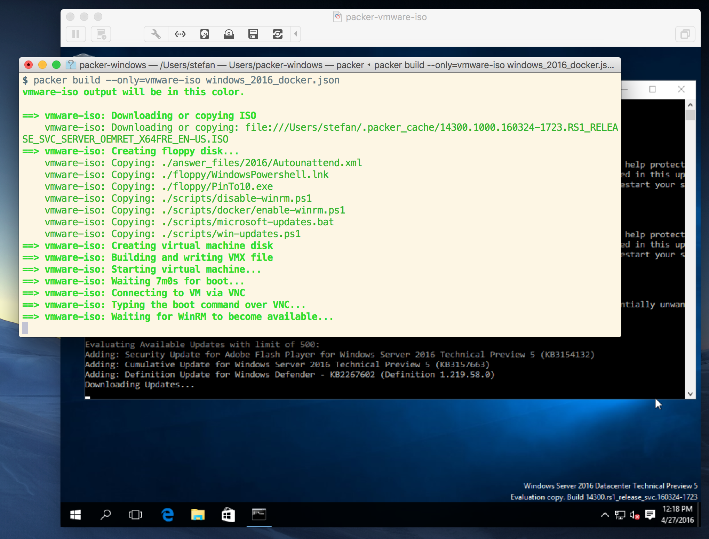
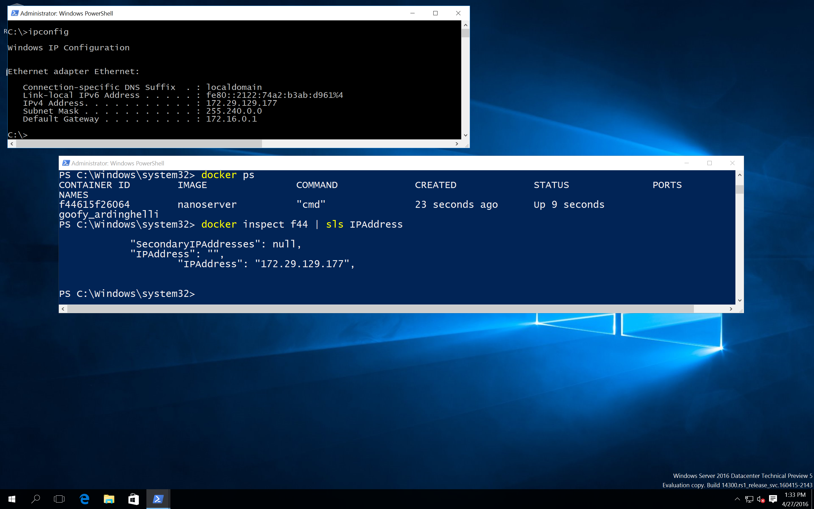
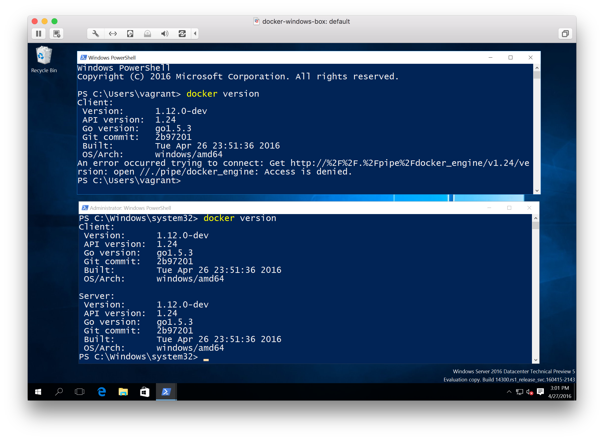
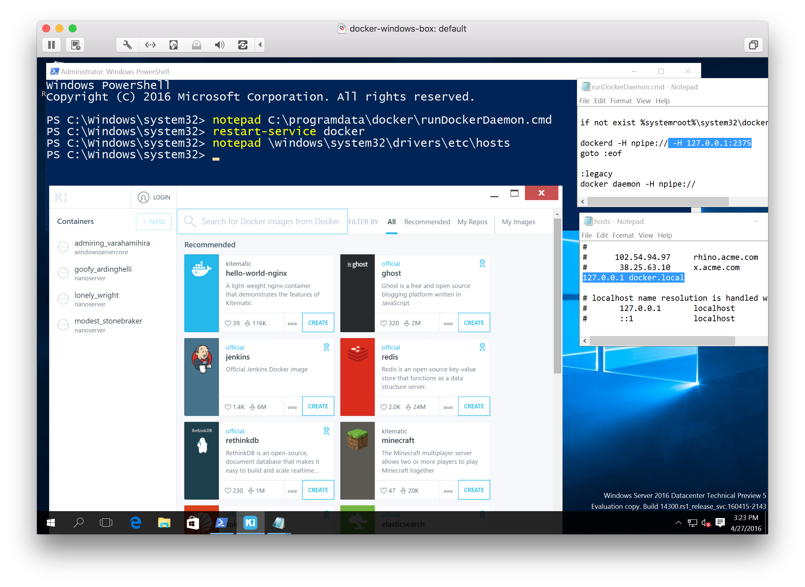

First impressions of Docker on Windows 2016 TP5
Yesterday Microsoft announced the availabilty of the Windows 2016 Technical Preview 5. Sure I had to get in touch with that new toy as soon as possible to see what has changed since TP4 that was released in November 2015.
As I haven't found an Azure template (update: today I found Windows Server 2016 Technical Preview 5), I prepared my packer templates in a tp5 branch that still need some changes to automatically build and install Docker and the Docker base images.

Even without a 100% solution this was a good first starting point build a first Vagrant box to start with and to do the remaining steps from Container Host Deployment - Windows Server manually.
I'm really addicted to the automation workflow
packer buildvagrant box addvagrant upvagrant destroy -f
because you won't do it only once to build and have such a test environment. But setting it up is the hard way.
If you are impatient to wait for a complete packer template you can follow Arun Gupta's steps to build a TP5 VM in VirtualBox.
Now let's see what's new in the Technical Preview 5.
Way faster - no more sleep
Building some Docker images with one of the Windows Dockerfiles I tested with TP4 are now much faster and as well you do not need to do the workaround of sleeping some seconds in each RUN command. Just remove this and forget about it.
IP adresses can be inspected
One of the obstacles porting the Docker Birthday app to TP4 Windows containers was the missing ability to fetch the IP adress of each container.
Running docker inspect now shows the IP address of the container.

I will have to test whether the links in a docker-compose.yml file will work as well to set up a simple multi container app using simple host names.
But that's a good improvement of the networking in Windows containers.
npipe is your unix socket
Another interesting thing is that the Docker engine now listens to a Windows named pipe, just like a Unix socket on Linux.
This leads to a very unixish behavior that you have to be "sudo" to run docker commands:
Running the docker client without adminstratotion rights you can't connect to it.

There is a way to allow specific users to use this named pipe just like on Linux adding users to the docker group, but I haven't found out the group name for this short test.
Kitematic meets Windows (again)
At this evening I also played with Docker for Windows Beta in a parallel VM and installed Kitematic there. As the Beta uses Kitematic without VirtualBox I thought this should also work well with TP5. So I took the ZIP file from the Beta download and tweaked my TP5 installation a little bit to make Kitematic talk to the Window Docker Engine.
My very pragmatic way to make this work was to add the local TCP port 2375 to the Docker Engine by editing the start script
notepad C:\ProgramData\docker\runDockerDaemon.cmd
and change the dockerd command to dockerd -H npipe:// -H 127.0.0.1:2375 and then run
restart-service docker
The downloaded version of Kitematic for the Beta also searches for docker.local, so I added the loopback IP address to the host table with
notepad C:\Windows\system32\drivers\etc\hosts

Now Kitematic starts up without creating a local VM and shows the local Windows containers on the left side.
There's a lot more to explore in TP5 as you now can pull and push Docker Images from and to the Docker Hub.
So stay tuned of upcoming blog posts. With the TP5 the community can follow the progress of Docker on Windows much better and can check the latest improvements and pull requests of the Windows Docker Engine.
If you find this blog post useful, just share it with your friends and colleages. Please leave a comment if you have questions or improvements. You can follow me on Twitter @stefscherer.